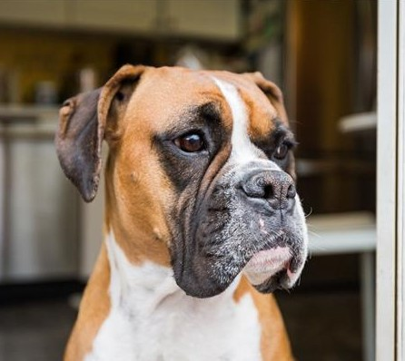
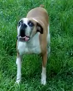

LARA Levrand, es una
Boxer Americana "Leonado",
nacio en la provincia de Entre Rios, en Paraná hace ya 6 años es muy llorona, siempre pide las cosas, parece que habla,
es un muy amable SER, sabe cuando estoy alegre, triste, cansado.
Conozcamos más acerca de esta criaturas
Sus características principales en cuanto al aspecto físico son: pelaje corto,
fuerte y brillante, no tiene arrugas en la piel, se para ligeramente diferente al bóxer europeo debido
a la forma de sus pies y posee hocico más amplio. Igualmente, el bóxer americano es un tanto más estilizado
y alargado que el bóxer europeo y su pelaje presenta características atigradas (en algunos casos).

Una vez presentadas las características del bóxer americano y del bóxer europeo se puede
decir que las diferencias principales entre estos dos estilos son:
El bóxer americano es más estilizado y alargado que el bóxer alemán.
El bóxer americano tiene pelaje atigrado, corto y brillante mientras
que el bóxer europeo presenta pelaje con tonos rojizo, corto y brillante.
El bóxer americano tiene el hocico más amplio que el bóxer europeo que lo tiene ligeramente más pequeño